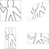
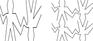
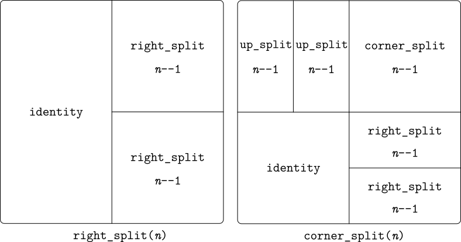
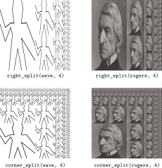
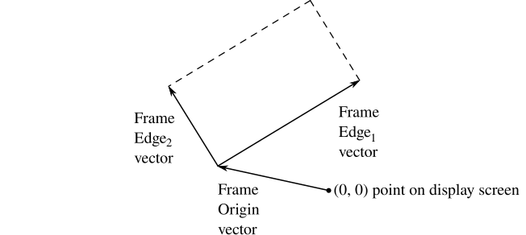

Permalink copied!
This section presents a simple language for drawing pictures that
illustrates the power of data abstraction and closure, and also exploits
higher-order
functions
in an essential way. The language is designed to make it easy to
experiment with patterns such as the ones in
figure 2.16, which are composed of
repeated elements that are shifted and scaled.
[1]
In this language, the data objects being
combined are represented as
functions
rather than as list structure. Just as
pair,
which satisfies the
closure property, allowed us to easily build arbitrarily complicated list
structure, the operations in this language, which also satisfy the closure
property, allow us to easily build arbitrarily complicated patterns.

Figure 2.16
Designs generated with the picture language.
Part of the elegance of this picture language is that there is only one
kind of element, called a
painter. A painter draws an image that is shifted and scaled to
fit within a designated
parallelogram-shaped frame. For example, there's a primitive painter
we'll call wave
that makes a crude line drawing,
as shown in figure 2.17.

Figure 2.17
Images produced by the wave
painter, with respect to four different frames. The frames, shown
with dashed lines, are not part of the images.
The actual shape of the drawing depends on the frame—all four
images in figure 2.17 are produced by the same
wave painter, but with respect to four
different frames. Painters can be more elaborate than this: The primitive
painter called rogers paints a picture of
MIT's founder, William Barton Rogers, as shown in
figure 2.18.
[2]
The four images in figure 2.18
are drawn with respect to the same four frames
as the wave images in
figure 2.17.

To combine images, we use various
operations that construct new painters
from given painters. For example, the
beside operation takes two painters and
produces a new, compound painter that draws the first painter's image
in the left half of the frame and the second painter's image in the
right half of the frame. Similarly,
below takes two painters and produces a
compound painter that draws the first painter's image below the
second painter's image. Some operations transform a single painter
to produce a new painter. For example,
flip_vert
takes a painter and produces a painter that draws its image upside-down, and
flip_horiz
produces a painter that draws the original painter's image
left-to-right reversed.
Figure 2.19 shows the drawing of a
painter called wave4
that is built up in two stages starting from
wave:
const wave2 = beside(wave, flip_vert(wave)); const wave4 = below(wave2, wave2);
In building up a complex image in this manner we are exploiting the fact
that painters are
closed under the language's means of combination.
The beside or
below of two painters is itself a painter;
therefore, we can use it as an element in making more complex painters.
As with building up list structure using
pair,
the closure of our data under the means of combination is crucial to the
ability to create complex structures while using only a few operations.

$\ $ const wave2 = const wave4 = beside(wave, flip_vert(wave)); below(wave2, wave2);
Once we can combine painters, we would like to be able to abstract typical
patterns of combining painters. We will implement the painter operations as
JavaScript functions.
This means that we don't need a special abstraction mechanism in the
picture language: Since the means of combination are ordinary
JavaScript functions,
we automatically have the capability to do anything with painter operations
that we can do with
functions.
For example, we can abstract the pattern in
wave4 as
function flipped_pairs(painter) {
const painter2 = beside(painter, flip_vert(painter));
return below(painter2, painter2);
}
and
declare
wave4 as an instance of this
pattern:
const wave4 = flipped_pairs(wave);

Figure 2.21
Recursive plans for
right_split and
corner_split.
We can also define recursive operations. Here's one that makes
painters split and branch towards the right as shown in
figures 2.21
and
2.23:
function right_split(painter, n) {
if (n === 0) {
return painter;
} else {
const smaller = right_split(painter, n - 1);
return beside(painter, below(smaller, smaller));
}
}
We can produce balanced patterns by branching upwards as well as towards
the right (see exercise 2.44 and
figures 2.21
and 2.23):
function corner_split(painter, n) {
if (n === 0) {
return painter;
} else {
const up = up_split(painter, n - 1);
const right = right_split(painter, n - 1);
const top_left = beside(up, up);
const bottom_right = below(right, right);
const corner = corner_split(painter, n - 1);
return beside(below(painter, top_left),
below(bottom_right, corner));
}
}

By placing four copies of a
corner_split
appropriately, we obtain a pattern called
square_limit,
whose application to wave and
rogers is shown in
figure 2.16:
function square_limit(painter, n) {
const quarter = corner_split(painter, n);
const half = beside(flip_horiz(quarter), quarter);
return below(flip_vert(half), half);
}
Declare the function
up_split
used by
corner_split.
It is similar to
right_split,
except that it switches the roles of below
and beside.
function up_split(painter, n) {
if (n === 0) {
return painter;
} else {
const smaller = up_split(painter, n - 1);
return stack(beside(smaller, smaller), painter);
}
}
In addition to abstracting patterns of combining painters, we can work at a
higher level, abstracting patterns of combining painter operations. That
is, we can view the painter operations as elements to manipulate and can
write means of combination for these
elements—functions
that take painter operations as arguments and create new painter operations.
For example,
flipped_pairs
and
square_limit
each arrange four copies of a painter's image in a square pattern;
they differ only in how they orient the copies. One way to abstract this
pattern of painter combination is with the following
function,
which takes four one-argument painter operations and produces a painter
operation that transforms a given painter with those four operations and
arranges the results in a square.
[3]
The functions tl,
tr, bl, and
br are the transformations to apply to the
top left copy, the top right copy, the bottom left copy, and the bottom
right copy, respectively.
function square_of_four(tl, tr, bl, br) {
return painter => {
const top = beside(tl(painter), tr(painter));
const bottom = beside(bl(painter), br(painter));
return below(bottom, top);
};
}
Then
flipped_pairs
can be defined in terms of
square_of_four
as follows:
[4]
function flipped_pairs(painter) {
const combine4 = square_of_four(identity, flip_vert,
identity, flip_vert);
return combine4(painter);
}
and
square_limit
can be expressed as
[5]
function square_limit(painter, n) {
const combine4 = square_of_four(flip_horiz, identity,
rotate180, flip_vert);
return combine4(corner_split(painter, n));
}
The functions
right_split
and
up_split
can be expressed as instances of a general splitting operation.
Declare a function
split with the property that evaluating
const right_split = split(beside, below); const up_split = split(below, beside);
produces
functions
right_split
and
up_split
with the same behaviors as the ones already declared.
function split(bigger_op, smaller_op) {
function rec_split(painter, n) {
if (n === 0) {
return painter;
} else {
const smaller = rec_split(painter, n - 1);
return bigger_op(painter,
smaller_op(smaller, smaller));
}
}
return rec_split;
}
const right_split = split(beside, below); right_split(rogers, 4);
Before we can show how to implement painters and their means of
combination, we must first consider
frames. A frame can be described by three vectors—an origin vector
and two edge vectors. The origin vector specifies the offset of the
frame's origin from some absolute origin in the plane, and the edge
vectors specify the offsets of the frame's corners from its origin.
If the edges are perpendicular, the frame will be rectangular.
Otherwise the frame will be a more general parallelogram.
Figure 2.24 shows a frame and its associated
vectors. In accordance with data abstraction, we need not be specific yet
about how frames are represented, other than to say that there is a
constructor
make_frame,
which takes three vectors and produces a frame, and three corresponding
selectors
origin_frame,
edge1_frame,
and
edge2_frame
(see exercise 2.47).

Figure 2.24
A frame is described by three vectors—an origin and two edges.
We will use coordinates in the
unit square
($0\leq x, y\leq 1$) to specify images. With
each frame, we associate a
frame coordinate map, which will be used to shift and scale images
to fit the frame. The map transforms the unit square into the frame by
mapping the vector $\mathbf{v}=(x, y)$ to the
vector sum
\[
\text{Origin(Frame)} + x\cdot \text{ Edge}_1\text{ (Frame)}
+ y\cdot \text{ Edge}_2\text{ (Frame)}
\]
For example, $(0, 0)$ is mapped to the origin of
the frame, $(1, 1)$ to the vertex diagonally
opposite the origin, and $(0.5, 0.5)$ to the
center of the frame. We can create a frame's coordinate map with
the following
function:
[6]
function frame_coord_map(frame) {
return v => add_vect(origin_frame(frame),
add_vect(scale_vect(xcor_vect(v),
edge1_frame(frame)),
scale_vect(ycor_vect(v),
edge2_frame(frame))));
}
Observe that applying
frame_coord_map
to a frame returns a
function
that, given a vector, returns a vector. If the argument vector is in the
unit square, the result vector will be in the frame. For example,
frame_coord_map(a_frame)(make_vect(0, 0));
returns the same vector as
origin_frame(a_frame);
A two-dimensional
vector $v$ running from the
origin to a point can be represented as a pair consisting of an
$x$-coordinate and a
$y$-coordinate. Implement a data abstraction
for vectors by giving a constructor
make_vect
and corresponding selectors
xcor_vect
and
ycor_vect.
In terms of your selectors and constructor, implement
functions
add_vect,
sub_vect,
and
scale_vect
that perform the operations vector addition, vector subtraction, and
multiplying a vector by a scalar:
\[\begin{array}{lll}
(x_1, y_1)+(x_2, y_2) &=& (x_1+x_2, y_1+y_2)\\
(x_1, y_1)-(x_2, y_2) &=& (x_1-x_2, y_1-y_2)\\
s\cdot(x, y)&= &(sx, sy)
\end{array}\]
function make_vect(x, y) {
return pair(x, y);
}
function xcor_vect(vector) {
return head(vector);
}
function ycor_vect(vector) {
return tail(vector);
}
function scale_vect(factor, vector) {
return make_vect(factor * xcor_vect(vector),
factor * ycor_vect(vector));
}
function add_vect(vector1, vector2) {
return make_vect(xcor_vect(vector1)
+ xcor_vect(vector2),
ycor_vect(vector1)
+ ycor_vect(vector2));
}
function sub_vect(vector1, vector2) {
return make_vect(xcor_vect(vector1)
- xcor_vect(vector2),
ycor_vect(vector1)
- ycor_vect(vector2));
}
Here are two possible constructors for frames:
function make_frame(origin, edge1, edge2) {
return list(origin, edge1, edge2);
}
function make_frame(origin, edge1, edge2) {
return pair(origin, pair(edge1, edge2));
}For each constructor supply the appropriate selectors to produce an
implementation for frames.
-
function make_frame(origin, edge1, edge2) { return list(origin, edge1, edge2); } function origin_frame(frame) { return list_ref(frame, 0); } function edge1_frame(frame) { return list_ref(frame, 1); } function edge2_frame(frame) { return list_ref(frame, 2); } -
function make_frame(origin, edge1, edge2) { return pair(origin, pair(edge1, edge2)); } function origin_frame(frame) { return head(frame); } function edge1_frame(frame) { return head(tail(frame)); } function edge2_frame(frame) { return tail(tail(frame)); }
A painter is represented as a
function
that, given a frame as argument, draws a particular image shifted and
scaled to fit the frame. That is to say, if
p is a painter and
f is a frame, then we produce
p's image in
f by calling p
with f as argument.
The details of how primitive painters are implemented depend on the
particular characteristics of the graphics system and the type of image to
be drawn. For instance, suppose we have a
function
draw_line
that draws a line on the screen between two specified points. Then we can
create painters for line drawings, such as the
wave
painter in figure 2.17, from lists of line
segments as follows:
[7]
function segments_to_painter(segment_list) {
return frame =>
for_each(segment =>
draw_line(
frame_coord_map(frame)
(start_segment(segment)),
frame_coord_map(frame)
(end_segment(segment))),
segment_list);
}
The segments are given using coordinates with respect to the unit square.
For each segment in the list, the painter transforms the segment endpoints
with the frame coordinate map and draws a line between the transformed
points.
Representing painters as
functions
erects a powerful abstraction barrier in the picture language. We can
create and intermix all sorts of primitive painters, based on a variety of
graphics capabilities. The details of their implementation do not matter.
Any
function
can serve as a painter, provided that it takes a frame as argument and
draws something scaled to fit the frame.
[8]
A directed line segment in the plane can be represented as a pair of
vectors—the vector running from the origin to the start-point of
the segment, and the vector running from the origin to the end-point of
the segment. Use your vector representation from
exercise 2.46 to define a representation for
segments with a constructor
make_segment
and selectors
start_segment
and
end_segment.
function make_segment(v_start, v_end) {
return pair(v_start, v_end);
}
function start_segment(v) {
return head(v);
}
function end_segment(v) {
return tail(v);
}
Use
segments_to_painter
to define the following primitive painters:
- The painter that draws the outline of the designated frame.
-
The painter that draws an
X
by connecting opposite corners of the frame. - The painter that draws a diamond shape by connecting the midpoints of the sides of the frame.
- The wave painter.
-
The painter that draws the outline of the designated frame.
const outline_start_1 = make_vect(0, 0); const outline_end_1 = make_vect(1, 0); const outline_segment_1 = make_segment(outline_start_1, outline_end_1); const outline_start_2 = make_vect(1, 0); const outline_end_2 = make_vect(1, 1); const outline_segment_2 = make_segment(outline_start_2, outline_end_2); const outline_start_3 = make_vect(1, 1); const outline_end_3 = make_vect(0, 1); const outline_segment_3 = make_segment(outline_start_3, outline_end_3); const outline_start_4 = make_vect(0, 1); const outline_end_4 = make_vect(0, 0); const outline_segment_4 = make_segment(outline_start_4, outline_end_4); const outline_painter = segments_to_painter( list(outline_segment_1, outline_segment_2, outline_segment_3, outline_segment_4)); -
The painter that draws an
X
by connecting opposite corners of the frame.const x_start_1 = make_vect(0, 0); const x_end_1 = make_vect(1, 1); const x_segment_1 = make_segment(x_start_1, x_end_1); const x_start_2 = make_vect(1, 0); const x_end_2 = make_vect(0, 1); const x_segment_2 = make_segment(x_start_2, x_end_2); const x_painter = segments_to_painter( list(x_segment_1, x_segment_2)); -
The painter that draws a diamond shape by connecting the midpoints of
the sides of the frame.
const diamond_start_1 = make_vect(0.5, 0); const diamond_end_1 = make_vect(1, 0.5); const diamond_segment_1 = make_segment(diamond_start_1, diamond_end_1); const diamond_start_2 = make_vect(1, 0.5); const diamond_end_2 = make_vect(0.5, 1); const diamond_segment_2 = make_segment(diamond_start_2, diamond_end_2); const diamond_start_3 = make_vect(0.5, 1); const diamond_end_3 = make_vect(0, 0.5); const diamond_segment_3 = make_segment(diamond_start_3, diamond_end_3); const diamond_start_4 = make_vect(0, 0.5); const diamond_end_4 = make_vect(0.5, 0); const diamond_segment_4 = make_segment(diamond_start_4, diamond_end_4); const diamond_painter = segments_to_painter( list(diamond_segment_1, diamond_segment_2, diamond_segment_3, diamond_segment_4));
An operation on painters (such as
flip_vert
or beside)
works by creating a painter that invokes the original painters with respect
to frames derived from the argument frame. Thus, for example,
flip_vert
doesn't have to know how a painter works in order to flip
it—it just has to know how to turn a frame upside down: The flipped
painter just uses the original painter, but in the inverted frame.
Painter operations are based on the
function
transform_painter,
which takes as arguments a painter and information on how to transform a
frame and produces a new painter. The transformed painter, when called on
a frame, transforms the frame and calls the original painter on the
transformed frame. The arguments to
transform_painter
are points (represented as vectors) that specify the corners of the new
frame: When mapped into the frame, the first point specifies the new
frame's origin and the other two specify the ends of its edge vectors.
Thus, arguments within the unit square specify a frame contained within the
original frame.
function transform_painter(painter, origin, corner1, corner2) {
return frame => {
const m = frame_coord_map(frame);
const new_origin = m(origin);
return painter(make_frame(
new_origin,
sub_vect(m(corner1), new_origin),
sub_vect(m(corner2), new_origin)));
};
}
Here's how to flip painter images vertically:
function flip_vert(painter) {
return transform_painter(painter,
make_vect(0, 1), // new origin
make_vect(1, 1), // new end of edge1
make_vect(0, 0)); // new end of edge2
}
Using
transform_painter,
we can easily define new transformations.
For example, we can declare a
painter that shrinks its image to the upper-right quarter of the frame
it is given:
function shrink_to_upper_right(painter) {
return transform_painter(painter,
make_vect(0.5, 0.5),
make_vect(1, 0.5),
make_vect(0.5, 1));
}
Other transformations rotate images counterclockwise by 90
degrees
[9]
function rotate90(painter) {
return transform_painter(painter,
make_vect(1, 0),
make_vect(1, 1),
make_vect(0, 0));
}
or squash images towards the center of the frame:
[10]
function squash_inwards(painter) {
return transform_painter(painter,
make_vect(0, 0),
make_vect(0.65, 0.35),
make_vect(0.35, 0.65));
}
Frame transformation is also the key to
defining means of combining two or more painters.
The beside
function,
for example, takes two painters, transforms them to paint in the left and
right halves of an argument frame respectively, and produces a new,
compound painter. When the compound painter is given a frame, it calls the
first transformed painter to paint in the left half of the frame and calls
the second transformed painter to paint in the right half of the frame:
function beside(painter1, painter2) {
const split_point = make_vect(0.5, 0);
const paint_left = transform_painter(painter1,
make_vect(0, 0),
split_point,
make_vect(0, 1));
const paint_right = transform_painter(painter2,
split_point,
make_vect(1, 0),
make_vect(0.5, 1));
return frame => {
paint_left(frame);
paint_right(frame);
};
}
Observe how the painter data abstraction, and in particular the
representation of painters as
functions,
makes
beside easy to implement. The
beside
function
need not know anything about the details of the component painters other
than that each painter will draw something in its designated frame.
Declare
the transformation
flip_horiz,
which flips painters horizontally, and transformations that rotate painters
counterclockwise by 180 degrees and 270 degrees.
-
The transformation
flip_horiz:
function flip_horiz(painter) { return transform_painter(painter, make_vect(1, 0), // new origin make_vect(0, 0), // new end of edge1 make_vect(1, 1)); // new end of edge2 } -
The transformation
rotate180:
function rotate180(painter) { return transform_painter( painter, make_vect(1, 1), // new origin make_vect(0, 1), // new end of edge1 make_vect(1, 0)); // new end of edge2 } -
The transformation
rotate270:
function rotate270(painter) { return transform_painter( painter, make_vect(0, 1), // new origin make_vect(0, 0), // new end of edge1 make_vect(1, 0)); // new end of edge2 }
Declare
the
below operation for painters.
The function below
takes two painters as arguments. The resulting painter, given a frame,
draws with the first painter in the bottom of the frame and with the
second painter in the top.
Define below in two different
ways—first by writing a
function
that is analogous to the
beside
function
given above, and again in terms of beside and
suitable rotation operations (from exercise 2.50).
-
First the direct method:
function below(painter1, painter2) { const split_point = make_vect(0, 0.5); const paint_upper = transform_painter(painter1, split_point, make_vect(1, 0.5), make_vect(0, 1)); const paint_lower = transform_painter(painter2, make_vect(0, 0), make_vect(1, 0), split_point); return frame => { paint_upper(frame); paint_lower(frame); }; } -
Now the version with rotation and
beside:
function below(painter1, painter2) { return rotate270(beside(rotate90(painter1), rotate90(painter2))); }
The picture language exploits some of the critical ideas we've
introduced about abstraction with
functions
and data. The fundamental data abstractions, painters, are implemented
using
functional
representations, which enables the language to handle different basic
drawing capabilities in a uniform way. The means of combination satisfy
the closure property, which permits us to easily build up complex designs.
Finally, all the tools for abstracting
functions
are available to us for abstracting means of combination for painters.
We have also obtained a glimpse of another crucial idea about languages and
program design. This is the approach of
stratified design, the notion that a complex system should be
structured as a sequence of levels that are described using a sequence of
languages. Each level is constructed by combining parts that are regarded
as primitive at that level, and the parts constructed at each level are
used as primitives at the next level. The language used at each level
of a stratified design has primitives, means of combination, and means
of abstraction appropriate to that level of detail.
Stratified design pervades the engineering of complex systems. For
example, in computer engineering, resistors and transistors are
combined (and described using a language of analog circuits) to
produce parts such as and-gates and or-gates, which form the
primitives of a language for digital-circuit design.
[11]
These parts are combined to build
processors, bus structures, and memory systems, which are in turn
combined to form computers, using languages appropriate to computer
architecture. Computers are combined to form distributed systems,
using languages appropriate for describing network interconnections,
and so on.
As a tiny example of stratification, our picture language uses primitive
elements (primitive painters) that specify points and lines to provide the
shapes of a painter like rogers. The bulk of
our description of the picture language focused on combining these
primitives, using geometric combiners such as
beside and below.
We also worked at a higher level, regarding
beside and below
as primitives to be manipulated in a language whose operations, such as
square_of_four,
capture common patterns of combining geometric combiners.
Stratified design helps make programs
robust, that is, it makes
it likely that small changes in a specification will require
correspondingly small changes in the program. For instance, suppose we
wanted to change the image based on wave
shown in figure 2.16. We could work
at the lowest level to change the detailed appearance of the
wave element; we could work at the middle
level to change the way
corner_split
replicates the wave; we could work at the
highest level to change how
square_limit
arranges the four copies of the corner. In general, each level of a
stratified design provides a different vocabulary for expressing the
characteristics of the system, and a different kind of ability to change it.
Make changes to the square limit of wave
shown in figure 2.16 by working at
each of the levels described above. In particular:
- Add some segments to the primitive wave painter of exercise 2.49 (to add a smile, for example).
- Change the pattern constructed by corner_split (for example, by using only one copy of the up_split and right_split images instead of two).
- Modify the version of square_limit that uses square_of_four so as to assemble the corners in a different pattern. (For example, you might make the big Mr. Rogers look outward from each corner of the square.)
// Click here to play with any abstraction // used for square_limit
[1]
The picture
language is based on the language
Peter Henderson created to construct images like
M.C. Escher's Henderson 1982 ). The woodcut incorporates a repeated
scaled pattern, similar to the arrangements drawn using the
square_limit
function
in this section.
Square Limitwoodcut (see
[2]
William Barton Rogers (1804–1882) was the founder and first
president of MIT. A geologist and talented teacher, he taught at
William and Mary College and at the University of Virginia. In 1859
he moved to Boston, where he had more time for research, worked on a
plan for establishing a
polytechnic institute,and served as Massachusetts's first State Inspector of Gas Meters. When MIT was established in 1861, Rogers was elected its first president. Rogers espoused an ideal of
useful learningthat was different from the university education of the time, with its overemphasis on the classics, which, as he wrote,
stand in the way of the broader, higher and more practical instruction and discipline of the natural and social sciences.This education was likewise to be different from narrow trade-school education. In Rogers's words:
The world-enforced distinction between the practical and the scientific worker is utterly futile, and the whole experience of modern times has demonstrated its utter worthlessness.Rogers served as president of MIT until 1870, when he resigned due to ill health. In 1878 the second president of MIT, John Runkle, resigned under the pressure of a financial crisis brought on by the Panic of 1873 and strain of fighting off attempts by Harvard to take over MIT. Rogers returned to hold the office of president until 1881. Rogers collapsed and died while addressing MIT's graduating class at the commencement exercises of 1882. Runkle quoted Rogers's last words in a memorial address delivered that same year:
In the words of Francis A. Walker (MIT's third president):As I stand here today and see what the Institute is, … I call to mind the beginnings of science. I remember one hundred and fifty years ago Stephen Hales published a pamphlet on the subject of illuminating gas, in which he stated that his researches had demonstrated that 128 grains of bituminous coal—Bituminous coal,these were his last words on earth. Here he bent forward, as if consulting some notes on the table before him, then slowly regaining an erect position, threw up his hands, and was translated from the scene of his earthly labors and triumphs tothe tomorrow of death,where the mysteries of life are solved, and the disembodied spirit finds unending satisfaction in contemplating the new and still unfathomable mysteries of the infinite future.
All his life he had borne himself most faithfully and heroically, and he died as so good a knight would surely have wished, in harness, at his post, and in the very part and act of public duty.
[3]
In square_of_four,
we use an extension of the syntax of lambda expressions that was introduced
in section 1.3.2: The body of a lambda
expression can be a block, not just a return expression.
Such a lambda expression has the shape
($parameters$) => { $statements$ } or
$parameter$ => { $statements$ }.
[4]
Equivalently, we could
write
const flipped_pairs = square_of_four(identity, flip_vert,
identity, flip_vert);
[6]
The function
frame_coord_map
uses the vector operations described in
exercise 2.46 below, which we assume have been
implemented using some representation for vectors. Because of data
abstraction, it doesn't matter what this vector representation is,
so long as the vector operations behave correctly.
[8]
For example, the rogers painter of
figure 2.18 was constructed from a gray-level
image. For each point in a given frame, the
rogers painter determines the point in
the image that is mapped to it under the frame coordinate map, and
shades it accordingly.
By allowing different types of painters, we are capitalizing on the
abstract data idea discussed in section 2.1.3,
where we argued that a rational-number representation could be anything at
all that satisfies an appropriate condition. Here we're using the
fact that a painter can be implemented in any way at all, so long as it
draws something in the designated frame.
Section 2.1.3 also showed how pairs could be
implemented as
functions.
Painters are our second example of a
functional
representation for data.
[9]
The function rotate90
is a pure rotation only for square frames, because it also stretches and
shrinks the image to fit into the rotated frame.
2.2.4
Example: A Picture Language